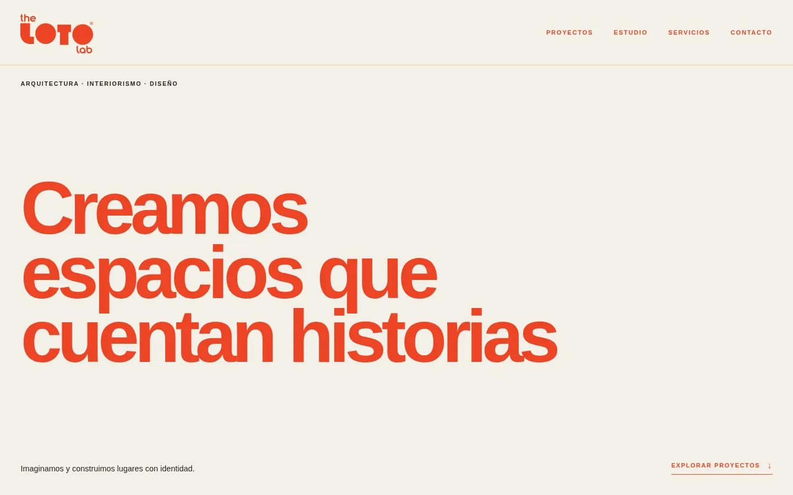
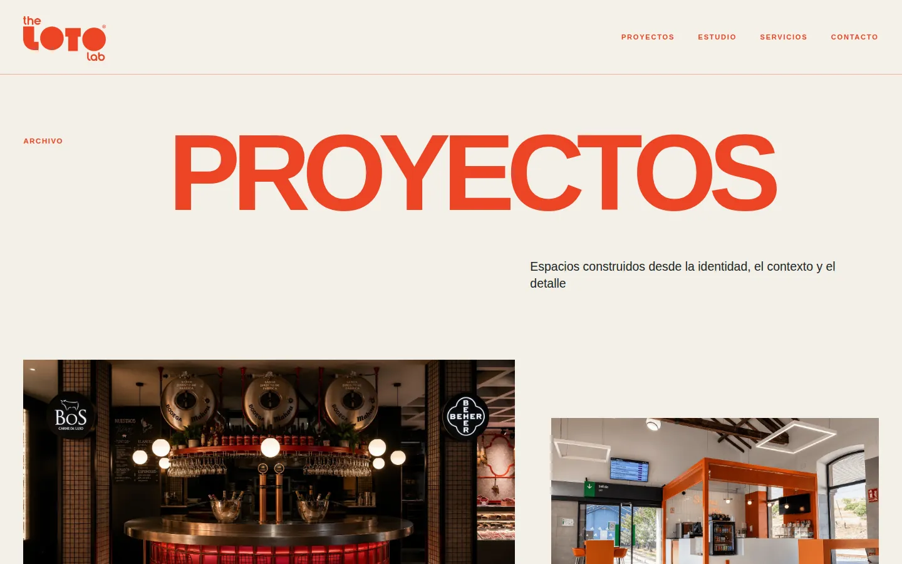
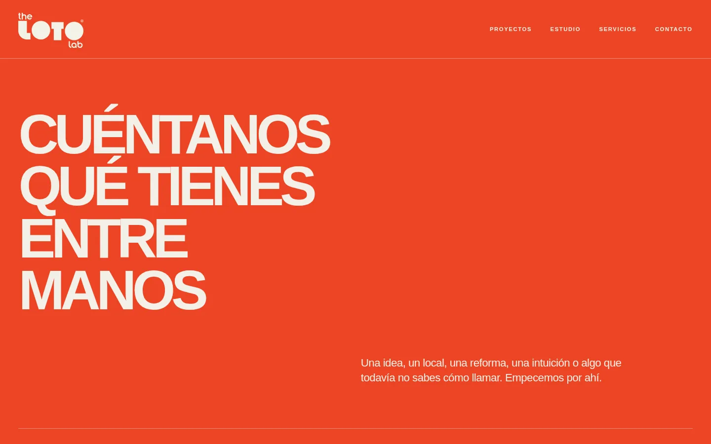
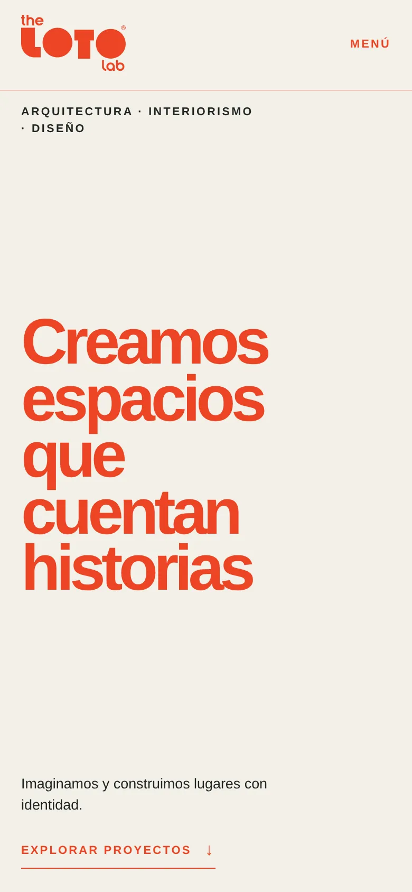
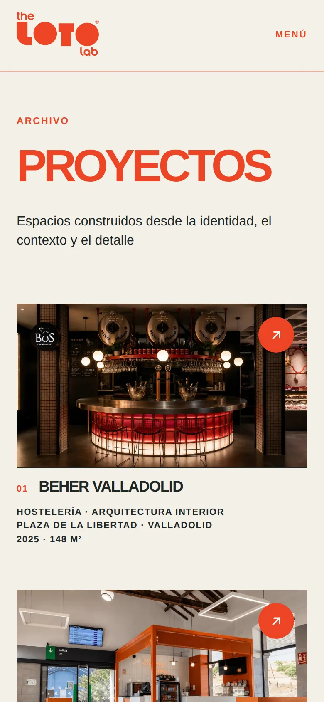

The Loto Lab
An architecture and interior design studio in Madrid needed its digital side to live up to the spaces it builds.
- Client
- The Loto Lab
- Industry
- Architecture
- What we did
- Website
- Web application
- Secure contact form
- Google Workspace
- Google verification
- Search visibility
- How it's shown
- Shown in full





The challenge
The Loto Lab designs and builds spaces with a strong identity: hospitality, retail and ephemeral architecture. Its website had to carry that same identity, and the business behind it needed proper email, Google Workspace and a verified presence on Google.
What we built
- Website
- The studio's site: projects, studio, services and contact, with its own typographic voice and fast-loading photography.
- Secure contact form
- Enquiries pass through a server-side handler with origin checks, spam protection, rate limiting and authenticated email delivery. Credentials live outside the public site.
- Email and Google Workspace
- Email on the studio's own domain and Google Workspace set up for the team.
- Google verification
- The domain and the business verified with Google.
- Search visibility
- Structured data that tells search engines who the studio is, what it does and where it works.
The result
The studio's projects are presented the way they were designed to be seen, enquiries arrive safely in the studio's inbox, and the everyday tools behind the business are set up properly.
ARC took the time to understand how our studio actually works, and built everything around it. The website finally feels like our projects do.